Concept
日本の魅力を、
暮らすように味わう。
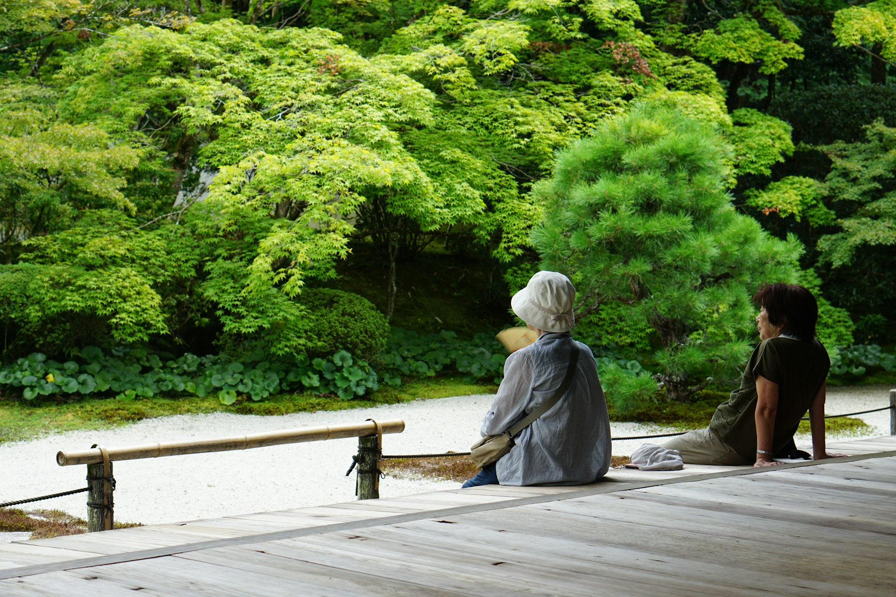
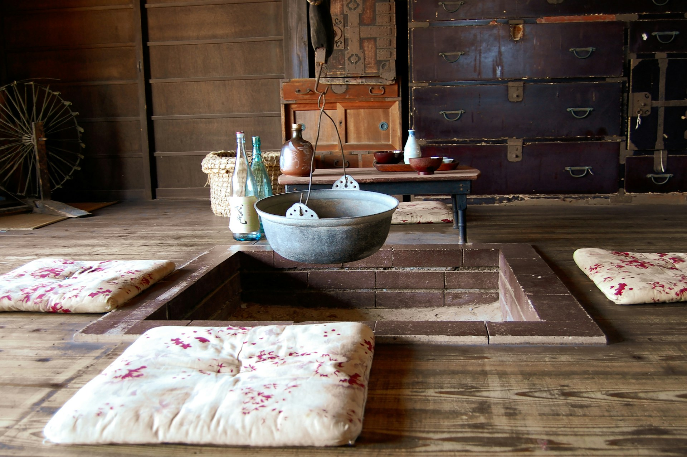
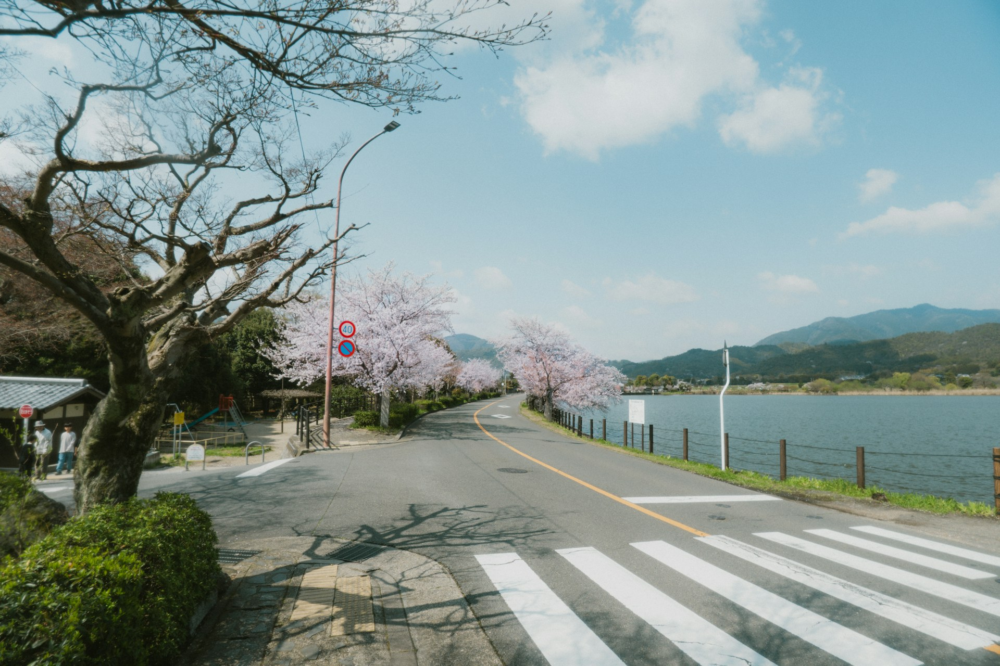
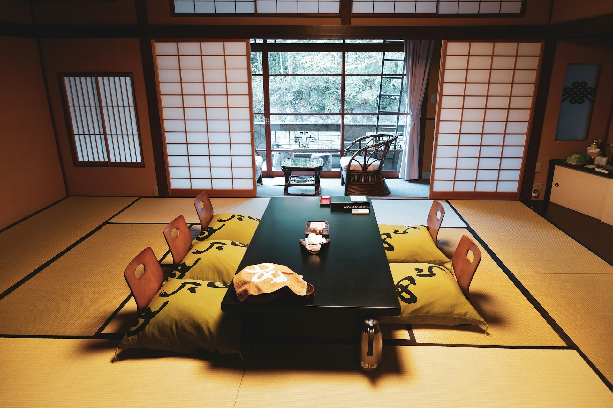
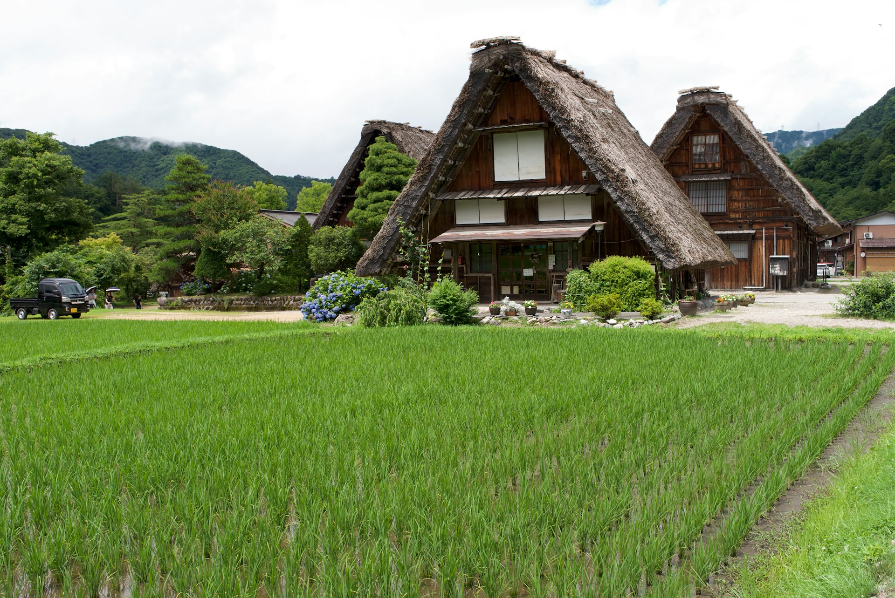
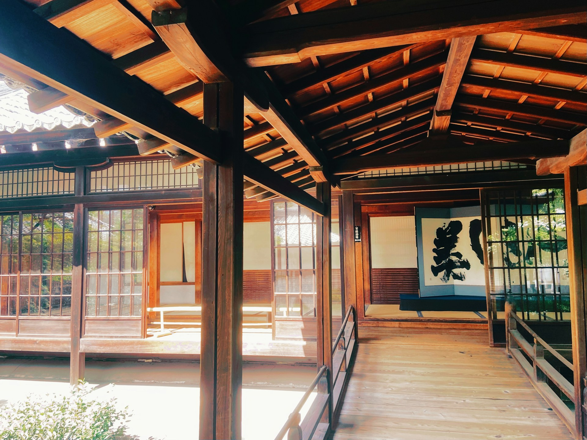
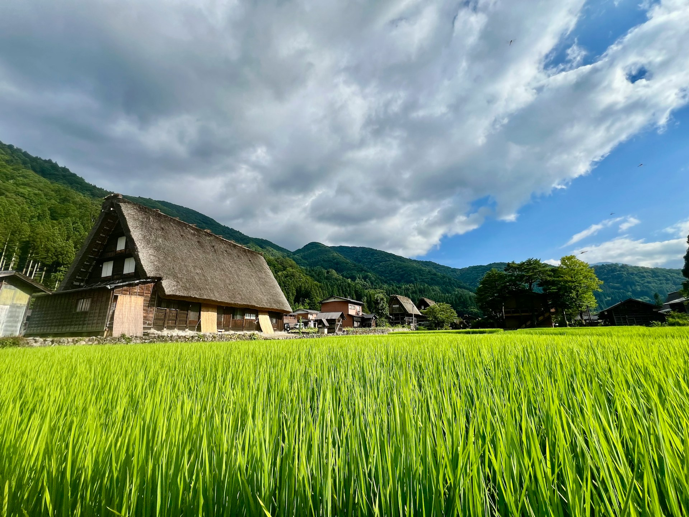
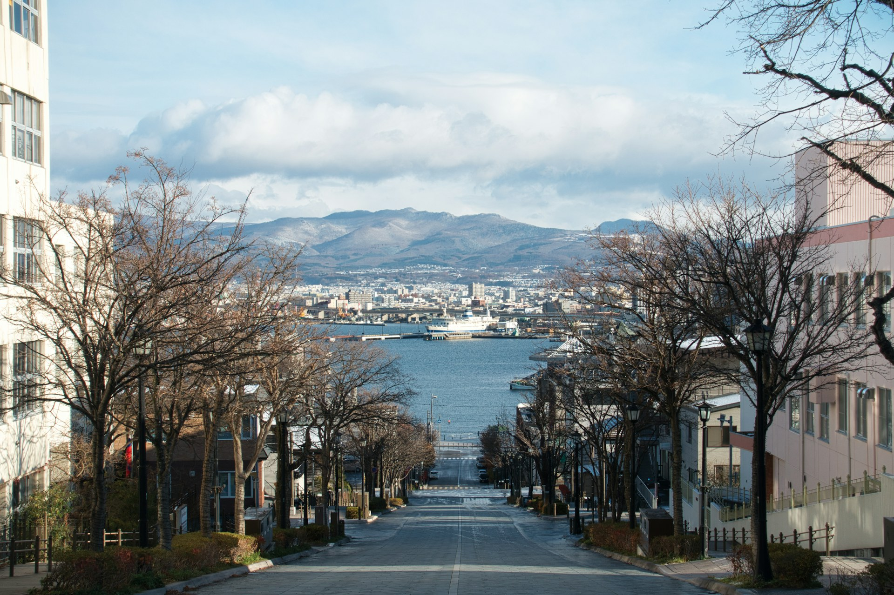
-
01Business
事業を つくる力 2人とも リクルート出身。
新規事業の立ち上げと、 ベンチャーでの 事業・組織 づくりを経験。 -
02Public
地域と 行政を 知る視点 片井は 静岡県庁 の出身。
自治体や地域の 方々と、 官民両方の 視点で 話を 進 め ます。 -
03Data
数字で 見極 める判断 位置情報データや テクノロジーの 経験から、 需要と 収支を 数字で 確か め ます。 -
04Field
自ら宿を 運営 する現場 静岡県下田市で 宿 を運営。
ご提案の数字は、 私たちの 運営記録が 元 です。

Media
私たちのメディア


アキヤド 空き家と民泊のメディア
空き家を 手放し たい方へ 相続した 家の 手放し方、 税金の 特例、 放置 のリスク 空き家を 任せたい方へ 家を 残して 宿に す る方法、 貸す 契約、 改修 の考え方 宿を はじめ たい方へ 民泊の 始め方、 制度 と届出、 開業資金、 集客と運営 宿の運営を 伸ばし たい方へ 数字の 見方、 予約の 増 やし方、 人手と 運営 の整え方


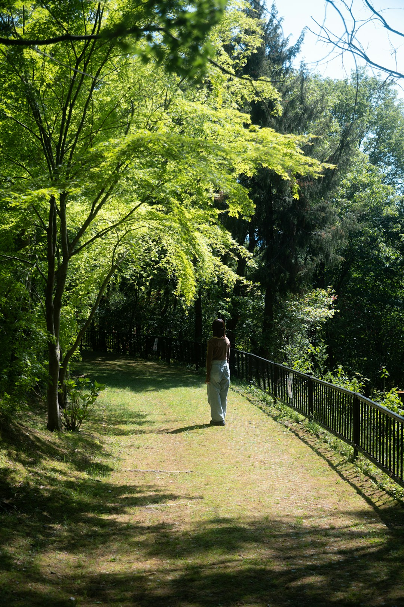
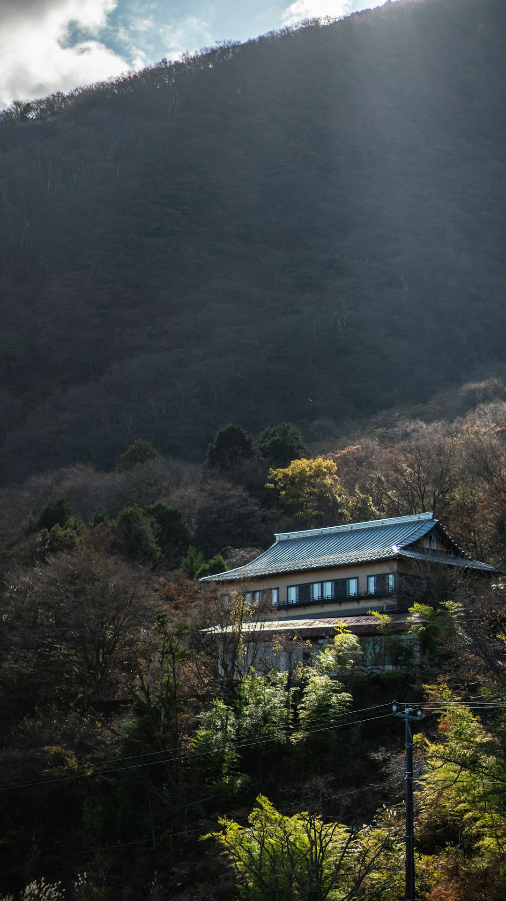
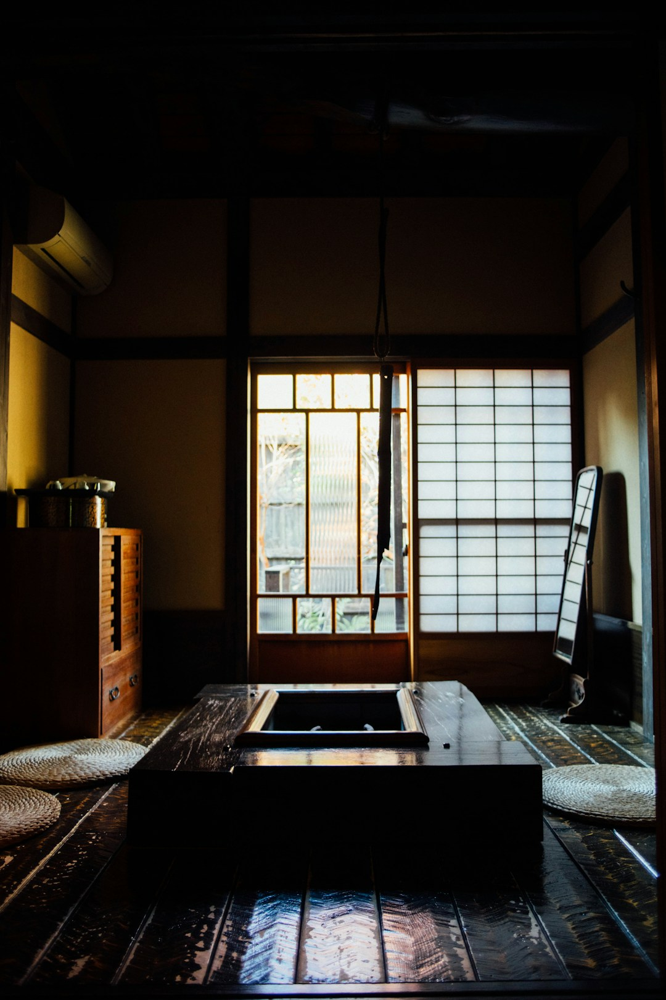
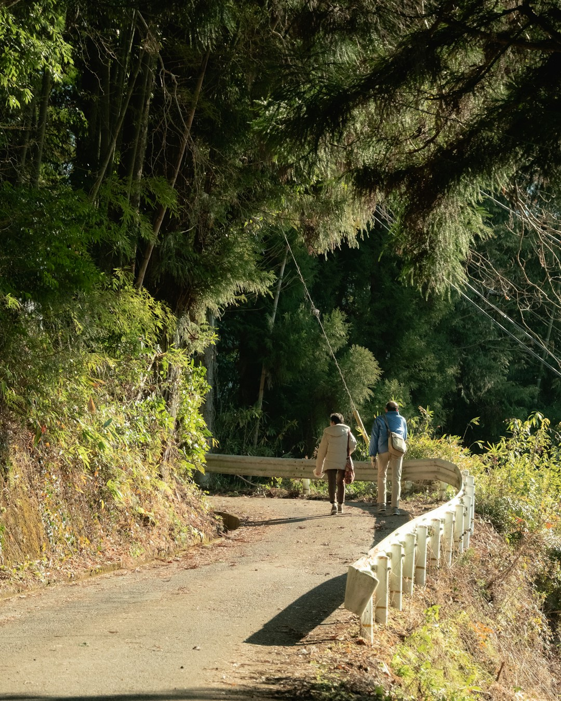
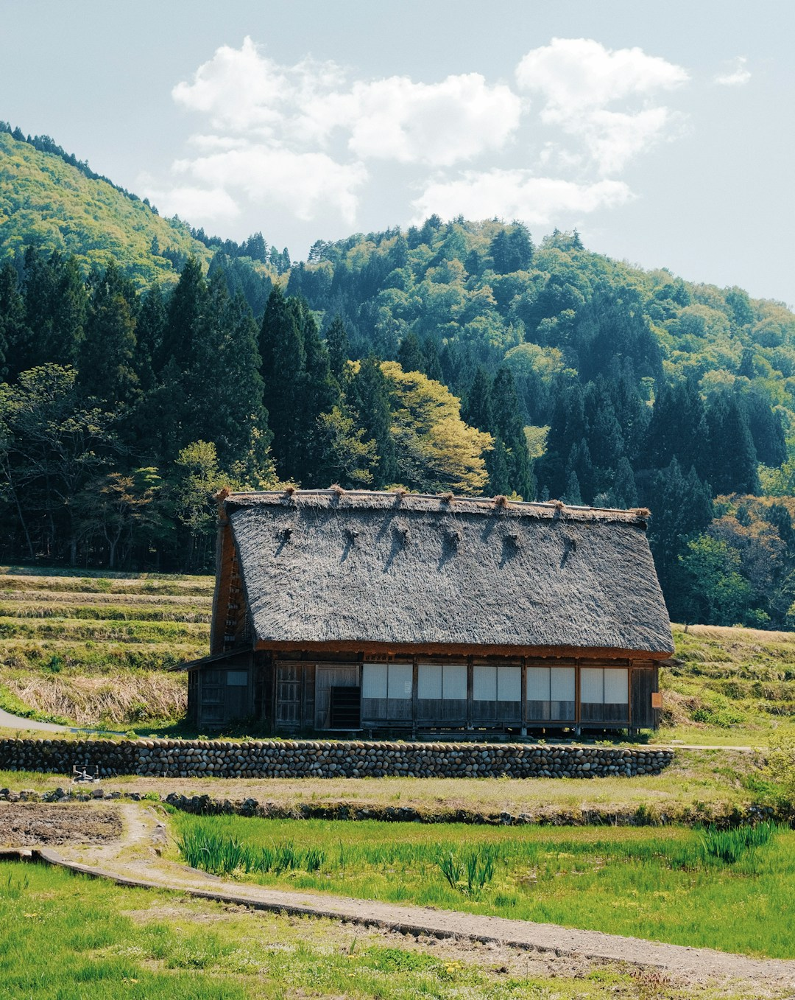
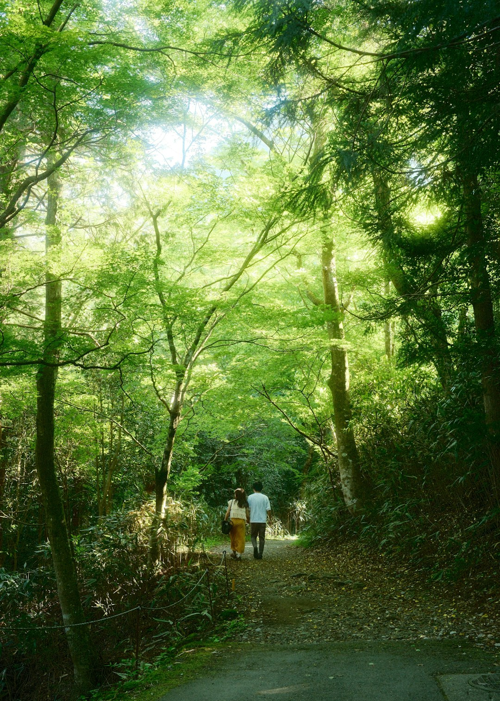
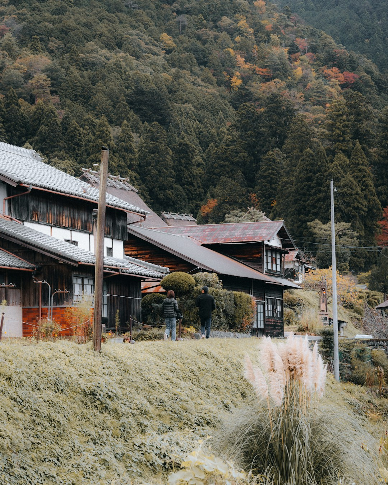
News & Topicsお知らせ
-
News
合同会社RIVIA&CO.を 設立いたし ま した。
CAREERS